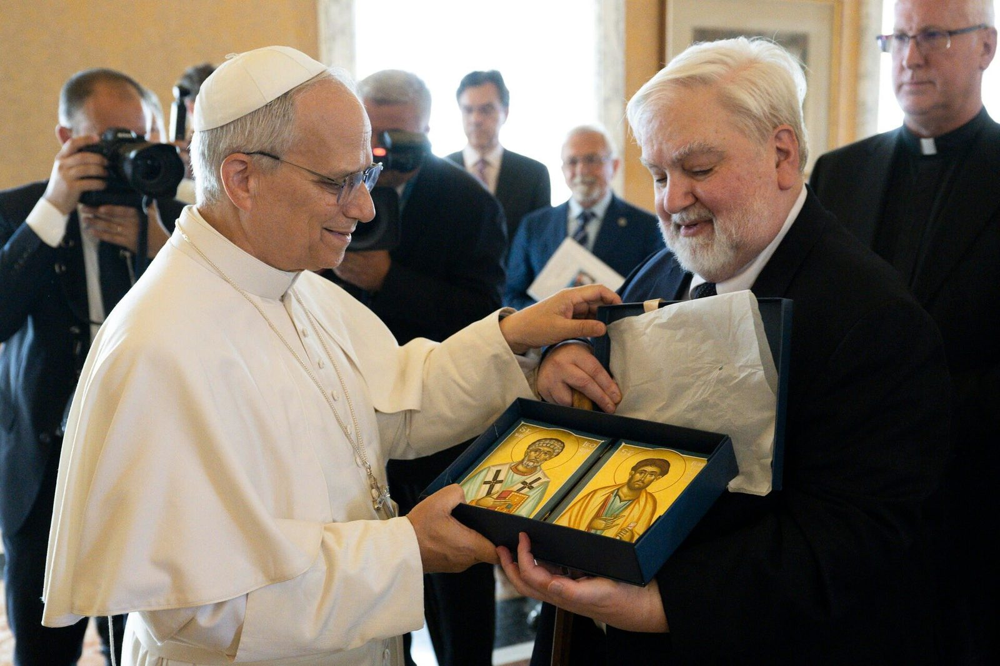

Board of Directors
A devoted layman-ecumenist with decades of engagement in Catholic-Orthodox dialogue. He founded Eastern Christian Publications in 1993 and has chaired the Orientale Lumen Foundation since its inception, organizing the annual Orientale Lumen conferences that bring together Eastern and Western Christians.